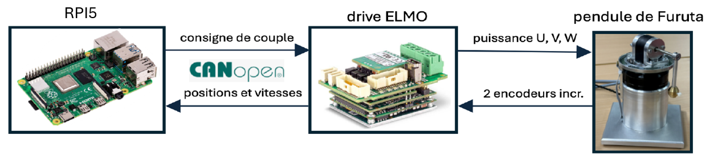
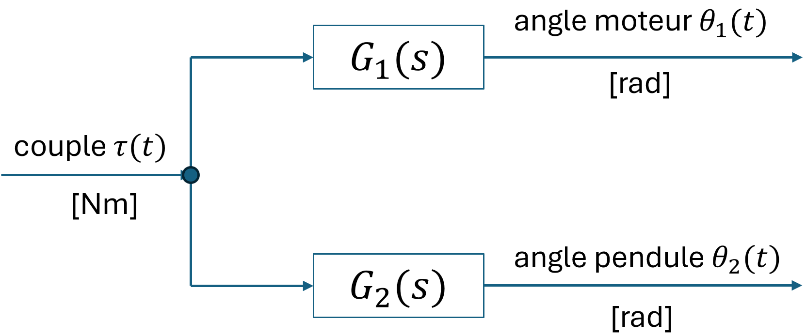
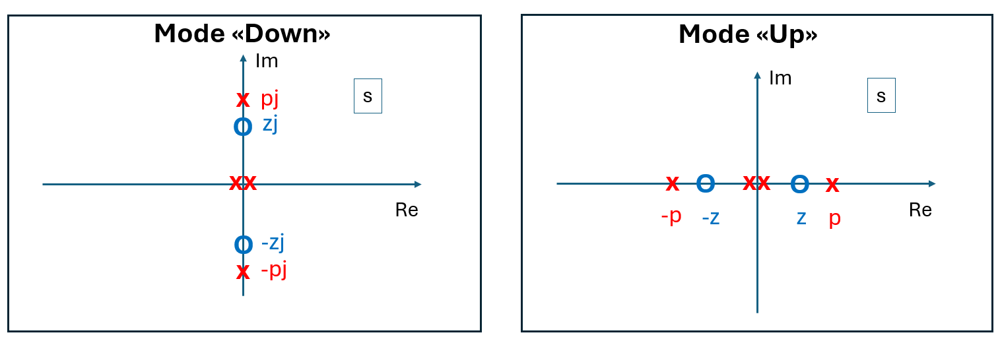
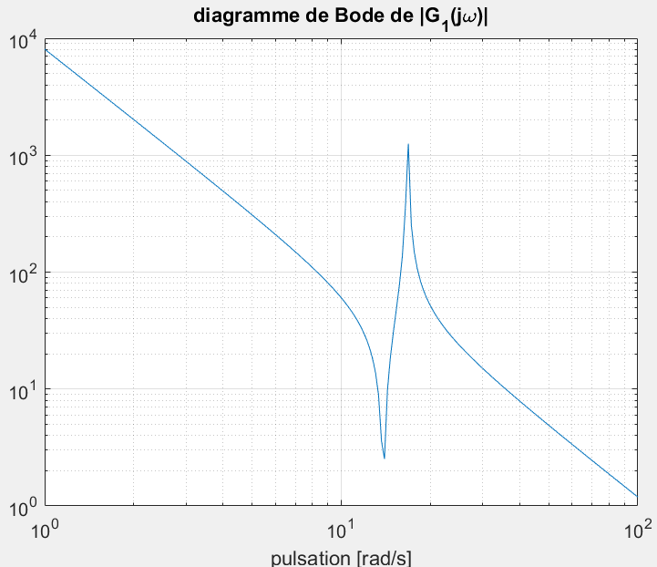

Régulation
Architecture de régulation

-
Le drive ELMO s'occupe de la commutation du moteur BLDC et de la régulation de courant, donc la régulation de couple. De surcroit, le drive ELMO interface les 2 capteurs incrémentaux, et calcule les vitesses de rotation. Le calcul des vitesses côté drive est moins bruitée, car le jitter de la période d'échantillonnage est très faible.
-
La RPI5 communique avec le drive via CANopen, et lui communique la consigne de couple via des trames PDO. Le drive transmet au RPI5 les positions et vitesses des deux encodeurs incrémentaux.
Logiciel de régulation
La régulation du pendule s'effectue sur la RPI5 dans le langage de programmation Python. Ce choix a été motivé par le fait que nos étudiants ont plus d'expérience en Python que en C. Cela permet aussi une facilité de programmation.
Evidemment Python ne permet pas d'atteindre le temps réel dur, et le jitter de la période d'échantillonnage est relativement élevé. Parfois, il y a même des coups d'horloge ratés. Ceci n'est pas trop grave, car la fréquence d'échantillonnage vaut 1 kHz, ce qui est très élevé par rapport à la dynamique de la maquette. Pour minimiser le problème du jitter, il faut impérativement lancer le programme de régulation en priorité maximale en utilisant la commande
sudo chrt --fifo 99 xxxx.py.
L'horloge pour lancer périodiquement le code de la régulation provient du drive ELMO. La RPI5 configure à l'initialisation des PDO CANopen sur le drive. Ces PDO sont à une cadence de 1 ms. Le programme de régulation sur la RPI5 fait un polling et attend la réception de la trame CANopen. Il n'y a donc pas d'interruptions ou d'events, c'est simplement une boucle while qui attend l'arrivée des trames.
Modélisation et identification
La modélisation du pendule de Furuta est basée sur la publication [2], dans laquelle le formalisme de Lagrange est utilisé pour trouver les équations différentielles nonlinéaires. Rien que l'expression de l'énergie cinétique n'est pas évidente. Ensuite, une linéarisation autour du point d'équilibre "Up" ou "Down" est appliquée. Cette approche n'est pas à la portée de nos étudiants Bachelor, car il leur manque les bases mécaniques et mathématiques. C'est pour cela que c'est préférable d'expliquer aux étudiants la structure d'un modèle linéaire simplifié.
Modéle linéaire simplifié
Avec les hypothèses simplificatrices suivantes a) Frottement et jeu mécanique négligeable b) Dynamique du drive négligeable c) Couple "cogging" du moteur négligeable d) Période d'échantillonnage négligeable e) Retards de transmission CANopen négligeables, on obtient un modèle linéaire simplifié en temps continu ayant la structure avec le schéma bloc suivant: 
Ici, \(\tau(t)\) est le signal d'entrée correspondant au couple appliqué au moteur, \(\theta_1(t)\) est l'angle mesuré du moteur et \(\theta_2(t)\) est l'angle mesuré du pendule. La structure des deux fonctions de transfert impliquées est la suivante : \(\(G_1(s) = \frac{k_1 (s^2 - z^2)}{s^2(s^2 - p^2)}\)\)et \(\(G_2(s) = \frac{k_2}{s^2 - p^2}\)\) ayant que quatre paramètres \(k_1, k_2, z\) et \(p\) à identifier.
En mode "Down", \(p^2\) et \(z^2\) sont négatifs ce qui donne lieu à deux pôles \(jp, -jp\) et deux zéros \(jz, -jz\) purement imaginaires. En mode "Up", \(p^2\) et \(z^2\) sont positifs ce qui donne lieu à deux pôles \(p, -p\) et deux zéros \(z, -z\) réels, disposés symmétriquement par rapport à l'origine. La figure ci-dessous résume la configuration pôles-zéros de \(G_1(s)\) pour les deux modes. 
Le facteur \(s^2\) au dénominateur de \(G_1(s)\) traduit un comportement double-intégrateur. Si l'on applique un couple constant, le moteur va essentiellement accélérer. Le terme \(\frac{s^2-z^2}{s^2-p^2}\) traduit le couple perturbateur exercé par le pendule sur le moteur. En mode "Down", \(p\) correspond à une pulsation de résonance, et \(z\) correspond à une pulsation d'anti-résonance.
Le changement entre "Down" et "Up" se traduit simplement par un changement de signe de \(p^2\), \(z^2\) et \(k_2\). Avec cette observation, on peut faire l'identification des quatre paramètres en mode "Down", ce qui est beaucoup plus facile, car le système à régler est stable. Puis ensuite, pour le modèle "Up", on peut simplement changer le signe des paramètres \(p^2\), \(z^2\) et \(k_2\).
L'identification et la mesure du diagramme de Bode présentent plusieurs difficultés:
- le comportement quasi double-intégrateur est fortement passe-bas et masque les effets à haute fréquence,
- l'anti-résonance et la résonance sont assez rapprochées, et il faudra une résolution fréquentielle élevée pour bien les visualiser,
- l'amortissement de l'anti-résonance et de la résonance est relativement faible, et le régime transitoire dure longtemps.
C'est pour cette raison, une suite binaire pseudo-aléatoire comme signal d'excitation a été écartée. Comme alternative, un signal purement sinusoïdal est appliqué en mode "Down" sur le couple \(\tau(t)\), sans présence de régulateur. Ensuite,
- le régime harmonique établi est attendu,
- les signaux \(\theta_1(t)\) et \(\theta_2(t)\) sont mesurés sur un nombre entier de périodes,
- ces signaux sont projetés (produit scalaire) sur \(e^{-j\omega t}\). Ceci correspont à l'évaluation de la transformée en \(\cal{Z}\) à une seule fréquence, et donne lieu à un nombre complexe
- le nombre complexe associé des sorties est divisé par celui de l'entrée
- la fréquence est incrémentée.
Cette manière de faire permet un contrôle précis de la grille fréquentielle et des amplitudes d'excitation. Après, on peut comparer les diagrammes de Bode mesurés avec les diagrammes de Bode du modèle, et ajuster "manuellement" les quatre paramètres (et évtl. les taux d'amortissement) jusqu'au point où les diagrammes de Bode mesurés et simulés collent "au mieux". L'effet des paramètres sur les diagrammes de Bode est évident, et on n'a pas forcément besoin d'une méthode d'optimisation.
Le diagramme de Bode de \(G_1(s)\) p.ex. devrait ressembler au graphique ci-dessous. 
Outils de simulation Matlab
Les outils suivants ont été développés :
Modelling_Control_S.mlx
Il s'agit d'un Live script Matlab, dans lequel se trouve
- une estimation des paramètres physiques
- le calcul du modèle linéarisé pour les deux points d'équilibre "Up" et "Down".
- Le calcul du gain du retour d'état, soit avec placement de pôles ou bien par LQR.
- L'appel du fichier de Simulink qui contient un modèle nonlinéaire avec modélisation de défauts
LinPlant = CalcLinPlant(J0_hat, J2_hat, m2, L1, l2, g, Mode)
La fonction CalcLinPlant.m calcule le modèle linéarisé dans l'espace d'état en fonction des paramètres physiques.
Furuta_CL_Sim.slx
C'est un modèle Simulink nonlinéaire affiné de la boucle fermée, incluant l'effet de l'échantillonnage, estimation de vitesse, etc.
[zsq, psq, k1, k2] = PhysPar2RedPar(J0_hat, J2_hat, m2, L1, l2, g, Mode)
La fonction PhysPar2RedPar.m calcule à partir des 6 paramètres physiques les 4 paramètres réduits.
LinPlant = RedPar2ss(zsq, psq, k1, k2)
La fonction RedPar2ss.m calcule à partir des 4 paramètres réduits une représentation dans l'espace d'état.
Il y a également des fichiers Python pour la simulation, mais ils sont moins élaborés que les fichiers Matlab/Simulink cités ci-dessus.